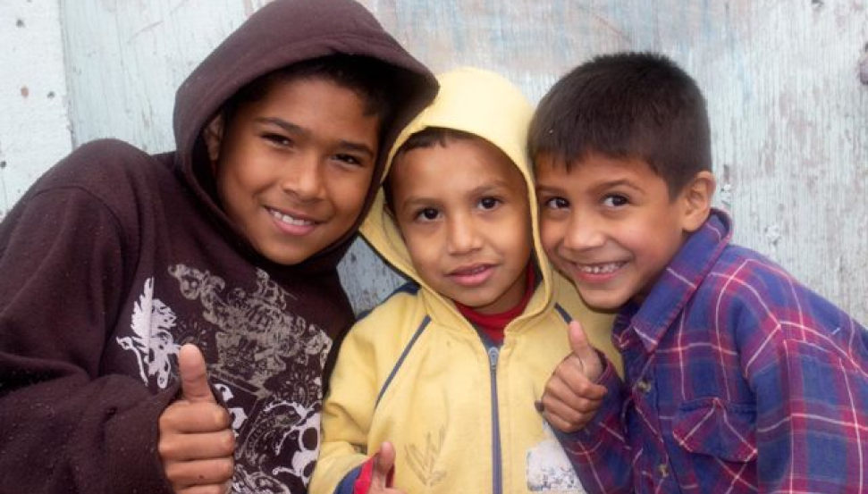
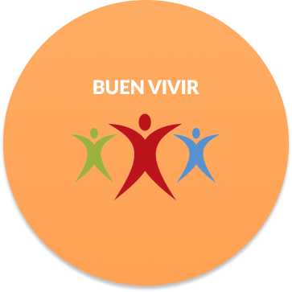
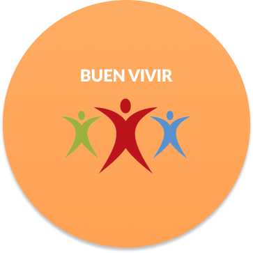
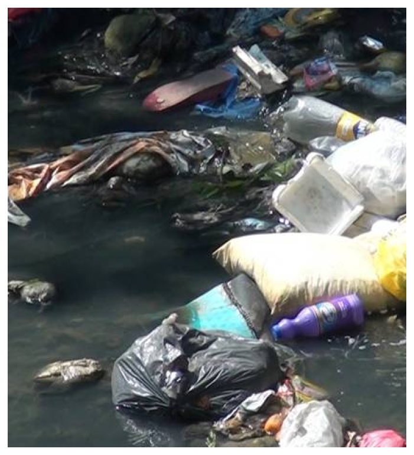
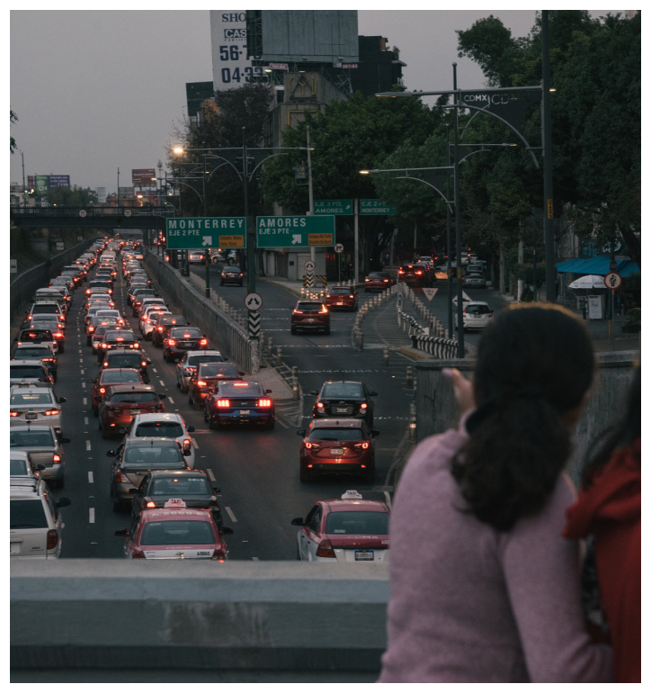

INICIO
¿QUIÉNES SOMOS?
NUESTRA HISTORIA
NUESTRO TRABAJO
¿CÓMO SUMARTE?
CONTACTO


✖
Español
 Inglés
Inglés
INICIO
¿QUIÉNES SOMOS?
NUESTRA HISTORIA
NUESTRO TRABAJO
¿CÓMO SUMARTE?
CONTACTO
Español
Inglés
NUESTROS SERVICIOS - PROYECTOS FILANTROPICOS
Somos una organización que promueve la educación por medio de capacitaciones, facilitando procesos
sociales integrales con la población más vulnerable; con el apoyo de aliados, cooperantes y los
proyectos propios; lo cual permite impactar a más y más beneficiarios.
Te invitamos a sumarte.
INN CHAMBA I.A.P. se encarga de enfocar sus esfuerzos y recursos a la población que más necesite capacitarse en las diferentes materias que impartimos. Sus donaciones, contribuciones y aportes nos permiten seguir afianzando nuestros servicios, tener una mejor cobertura, fortalecer nuestras actividades asistenciales existentes e implementar nuevas que hasta el momento no hemos podido. InnChamba en su carácter de donataria autorizada ante el SAT, nos permite expedir recibos deducibles de impuestos.
 

R econocemos que las cosas no van bien cuando el suelo, el agua, el aire y todos los seres vivos están bajo amenaza permanente que ponen en peligro no solo a los ecosistemas sino a los humanos. Conocer los problemas ambientales es el primer paso para concienciarnos de su importancia y reclamar y participar en acciones para la protección y recuperación de la naturaleza. Entre los problemas ambientales que mas destacan encontramos: el cambio climático, contaminación, deforestación, degradación del suelo, energía, escasez de agua, extinción de especies y pérdida de biodiversidad, invasión y trafico ilegal de especies, residuos y sobrepesca.
 R econocemos que las cosas no van bien cuando el suelo, el agua, el aire y todos los seres vivos están bajo amenaza permanente que ponen en peligro no solo a los ecosistemas sino a los humanos. Conocer los problemas ambientales es el primer paso para concienciarnos de su importancia y reclamar y participar en acciones para la protección y recuperación de la naturaleza. Entre los problemas ambientales que mas destacan encontramos: el cambio climático, contaminación, deforestación, degradación del suelo, energía, escasez de agua, extinción de especies y pérdida de biodiversidad, invasión y trafico ilegal de especies, residuos y sobrepesca.
R econocemos que las cosas no andan bien en un país donde hay campesinos sin tierras, donde estas se encuentran mal repartidas, algunas son explotadas para consumo de E.U.A., algunas de estas tierras están infrautilizadas, entre otras problemáticas, trayendo como consecuencias la migración de los campesinos a otros lugares, ejerciendo otras profesiones.
R econocemos que las cosas no van bien cuando hay aproximadamente 42.6 millones de mexicanos sumidos en la pobreza , dónde los más afectados son niños, mujeres, adultos mayores, gente del campo y personas con capacidades diferentes.
INN CHAMBA I.A.P., nace como una organización sin fines de lucro en el 2017 bajo el lema “Donde las ideas tienen consecuencias” . Dicho emprendimiento surgió de la necesidad de un cambio en la forma de resolver problemas comunes dentro de la sociedad, problemas que tienen un accionar global y hoy en día en ningún Estado puede resolver por sí mismo.
NUESTRA HISTORIA